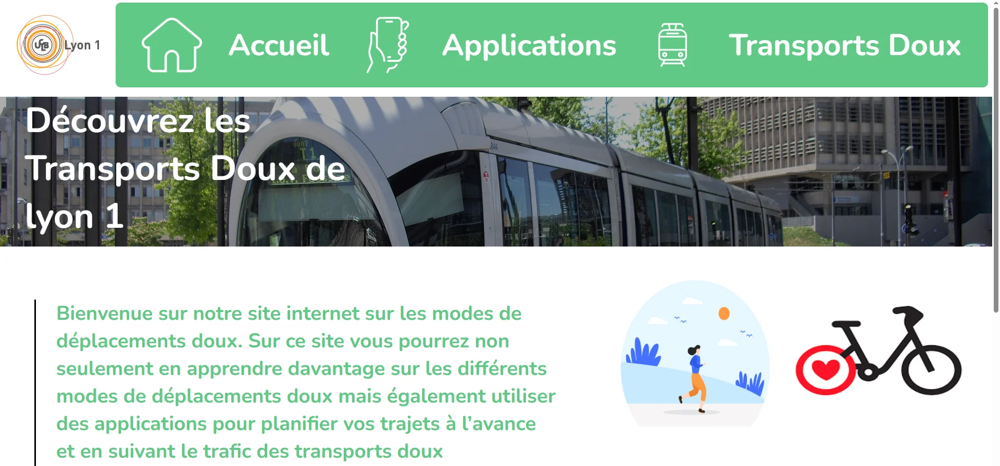

TransportsDoux
Ce site web regroupe toutes les informations essentielles sur les transports doux pour se rendre au campus de la Doua. La plateforme référence également les applications mobiles indispensables pour planifier vos trajets, consulter les horaires en temps réel, et accéder aux services de transport. Chaque solution est présentée avec ses avantages, ses tarifs, et des conseils pratiques pour faciliter vos déplacements quotidiens vers le campus.